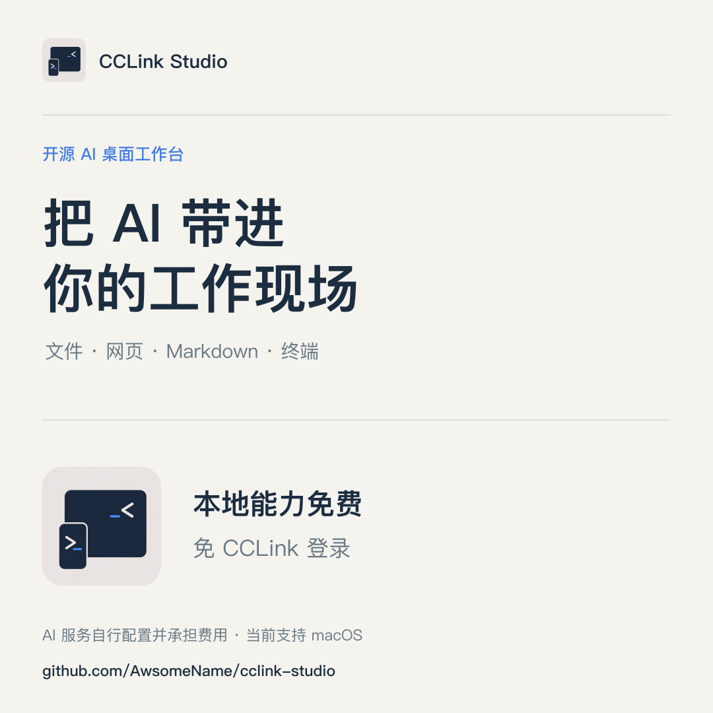
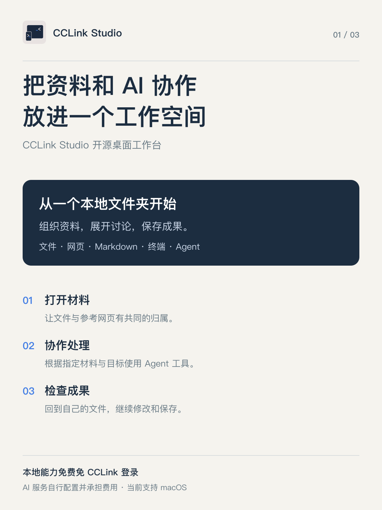
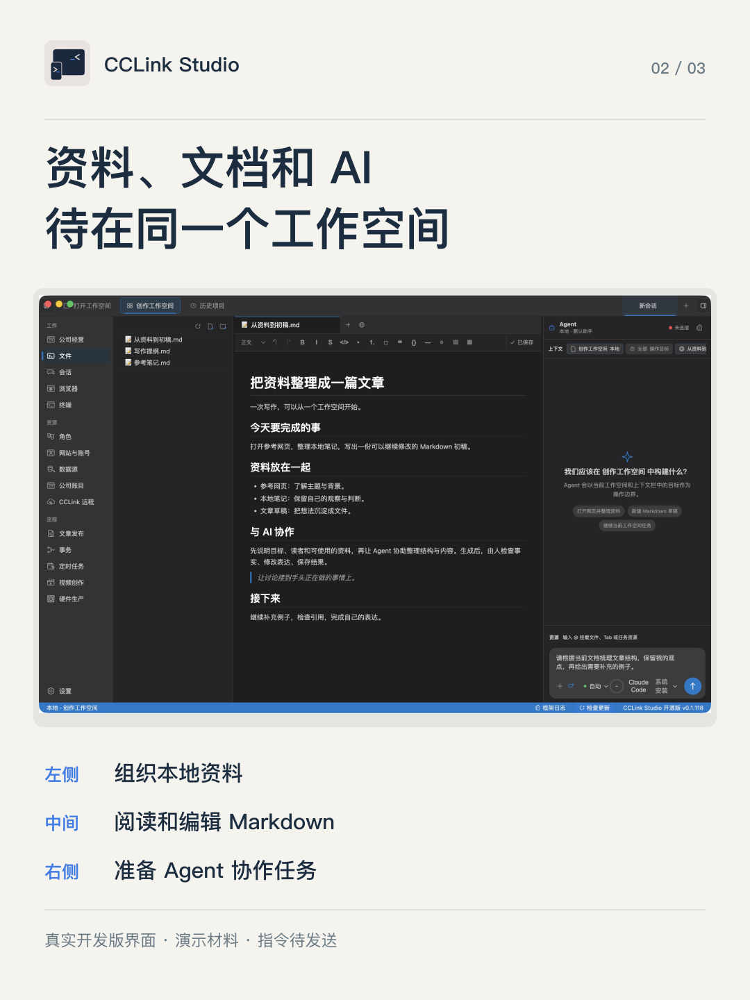
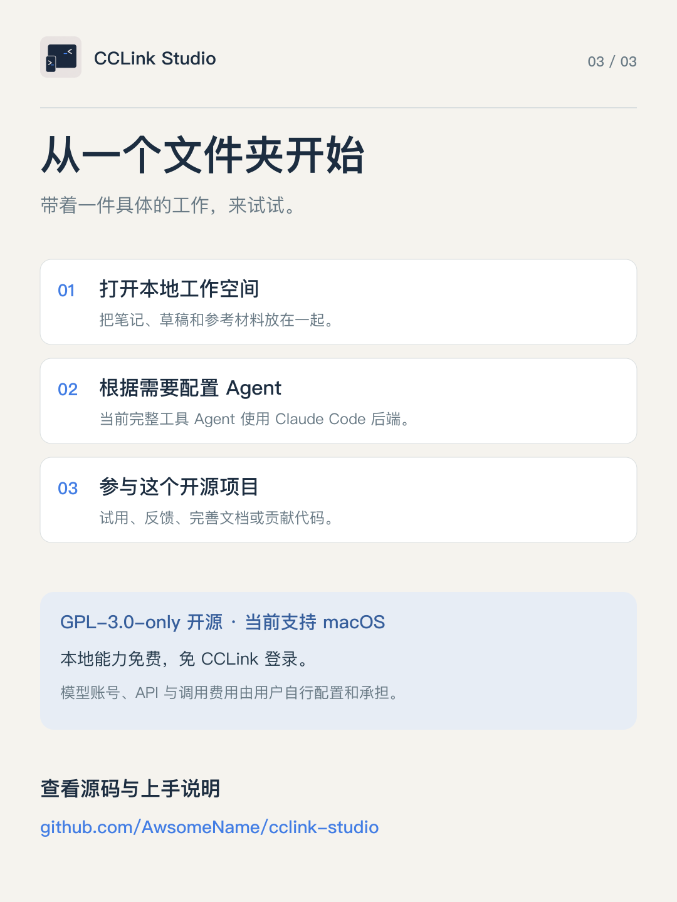

CCLink Studio 社交媒体宣传文案
朋友圈与社群版
最近在做一个开源项目：CCLink Studio。
想解决的，是工作时反复切换工具、复制资料、给 AI 解释背景这些麻烦。
我们把本地文件、浏览器、Markdown 编辑器、终端和 AI Agent 放进同一个桌面工作台。围绕一个工作空间查资料、写内容、运行命令，也让 AI 通过工具参与文档和网页操作。
本地功能免费，免 CCLink 登录；AI 服务自行配置并承担相关费用。项目采用 GPL-3.0-only 开源，当前支持 macOS。
欢迎试用、提建议，也欢迎一起参与。

简短转发版
我们正在做 CCLink Studio：一个开源的 AI 桌面工作台，把网页、文档、本地文件、终端和 AI 协作放在一起。
希望让每一次与 AI 的讨论，都更容易接到手头正在做的事情上。
本地功能免费免 CCLink 登录，AI 服务自行配置并承担费用，当前支持 macOS。欢迎体验：项目地址。
三图介绍版
正文：
工作时，我们常常在网页、文件夹、编辑器和 AI 对话之间来回切换。
CCLink Studio 想把这些放进同一个工作空间：打开自己的资料，边看、边写、边与 AI 协作，最后留下可以继续修改的文件。
项目已开源，本地功能免费免 CCLink 登录。当前支持 macOS，AI 服务自行配置并承担费用。欢迎从一个具体任务开始试用。
按以下顺序配图：



第二张为真实开发版界面配图，使用演示文档，Agent 指令尚未发送。其余为编辑制作的介绍图卡。